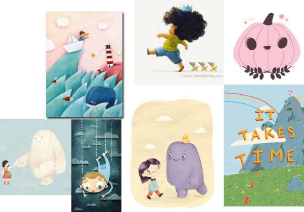
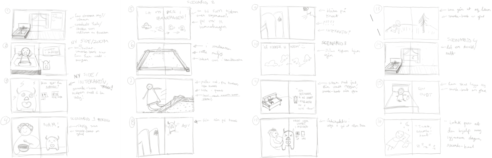
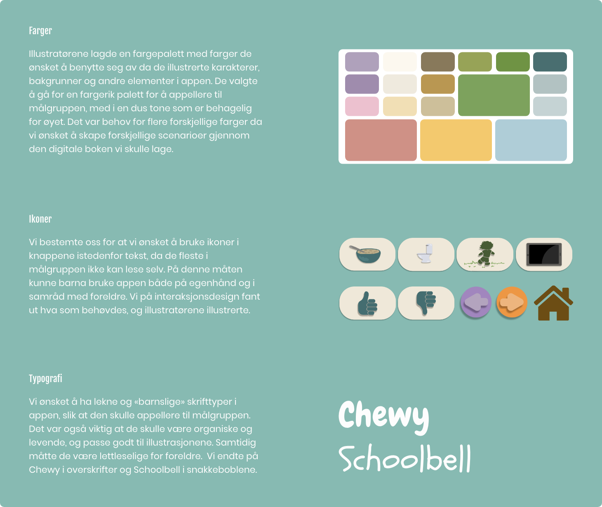

Introduksjon
Interaktive medier åpner en ny verden når det gjelder å forklare kompliserte konsepter og prosesser. Brukere kan få muligheten til å utforske en tematikk på egenhånd og i tillegg har man muligheten til å fortelle en historie gjennom en blanding av media som; bilder, animasjon, video og interaksjon.
I dette prosjektet skulle vi samarbeide med studenter fra illustrasjonsstudiet om å lage et interaktivt mini-kurs som forklarte hva smerte er og hvordan det påvirker kroppen.
Problemstilling
«Hvordan kan vi lære små barn om smerte ved bruk av illustrasjon og interaktiv storytelling?»
Oppdragsgiver
Fagskolen Kristiania / Pål Andre Thorsø Amundsen, høyskolelektor og studieleder for Bachelor i Osteopati
Team
Interaksjonsdesignere: Linh Nguyen, Jacqueline Lømsland Carroza & Amanda Jullum Ericsson
Illustratører: March Hebæk, Marie Hamlot Thorgersen & Victoria Therese Sunde Jacobsen
Tidsrom
10. februar til 5. mars 2021
Prototype
Test prototypen herVerktøy


Prosessen
Prosesshåndtering
Gjennom hele prosessen brukte vi Notion for å ha kontroll på fremdriften vår. Dette gjorde at vi hele tiden hadde konkrete mål og delmål å forholde oss til, og visste til enhver tid hva vi skulle gjøre.
Research
Hva er osteopati?
Vi var nødt til å sette oss litt ordentlig inn i temaet før vi kunne gå videre med researchen rettet mot appen vi ønsket å lage.
Osteopatien baserer seg på en grundig sykehistorie, manuell undersøkelse og behandling - hvor man vektlegger sammenhengen mellom fysiske, psykiske og sosiale faktorer som påvirker helsen vår. Manuell behandling, fysisk aktivitet og håndtering av en stressende hverdag er noe av det vanligste osteopater jobber med.
Målgrupper
Under prosjektpitchen med Pål Andre Thorsø Amundsen, så fikk vi vite at det finnes få interaktive læringsverktøy angående dette temaet som er rettet mot barn. På bakgrunn av dette fant vi raskt ut at vi ønsket å skape et produkt som rettet seg mot barn, og målgruppene ble dermed følgende:
Primærmålgruppe
Barn i alderen 3 til 6 år
Sekundærmålgruppe
Foreldre til barn i alderen 3 til 6 år
Barn og smertevurdering
Smertevurderingen er mest krevende hos de yngste barna, eller barn som ikke er i stand til å uttrykke seg. I sånne tilfeller brukes gjerne en verktøy som kalles FLACC (Face, Legs, Activity, Cry, Consolability) der helsepersonell kan vurdere smerter ut fra barnets kroppsspråk og atferd.
Kjennskap til barnets erfaringer og bruk av et smertescoringsverktøy som kan systematisere og konkretisere smerten gjør det enklere for helsepersonell å identifisere hvor det gjør vondt, hvor intense smertene er og deretter vurdere effekten av smertelindrende tiltak.
Når man skal tolke smerter hos et barn, så er trygghet og tillit svært viktig for å få barnet til å åpne seg. Mange barn skjuler smertene sine, i frykt for at det skal skje noe vondt hvis de sier i fra. Barn er også svært forskjellige, noen barn syns det er helt forferdelig med et stikk i fingeren ved en blodprøve, i mens andre kan takle det å sy uten særlig problemer.
Studier viser også at barn som har fått en god forklaring, og som har en viss forståelse for hva som skjer med dem, opplever ofte mindre frykt og smerte.
Barn og forebygging
Av kunden fikk vi også bekreftet at osteopater i utgangspunktet ikke ønsker å behandle små barn dersom det ikke er ytterst nødvendig. De ønsker heller å fokusere på forebygging, i form av at barn skal være i aktivitet og bevegelse.
Konseptutvikling
Konsept
Vi ville lage et interaktivt læringsverktøy som appellerte til barn med friske farger og fine illustrasjoner. Vi ønsket å lage en slags digital bok med historier som skulle være gjenkjennbare for barna. Vi så for oss at læringsverktøyet skulle være en app på iPad, da dagens barn er vant med den plattformen.
Inspirasjon
Interaksjonsdesign
Illustrasjon
Illustratørene lagde et inspoboard basert på hva slags illustrasjonsuttrykk vi skulle ha i appen. Vi på interaksjonsdesign lagde et inspoboard basert på hva slags interaksjoner vi så for oss at appen skulle ha.
Storyboard
Vi lagde storyboards for å finne ut hva slags scenarioer vi ønsket i appen, og hvordan historiene skulle foregå. På denne måten hadde både illustratørene og vi på interaksjonsdesign, samme utgangspunkt for hva som skulle lages.
Design og wireframing
Iterasjon 1
Dette var vår første raske prototype av ideen vi hadde.
Iterasjon 2
I andre iterasjon videreutviklet vi vårt konsept, og hva læringsverktøyet skulle inneholde. Med tanke på at små barn kan være vanskelig å utrede og behandle, samt at osteopater helst ønsker å fokusere på forebyggende tiltak i form av fysisk aktivitet, så valgte vi ikke å oppfordre til noen form for behandling gjennom læringsverktøyet, men heller oppfordre til fysisk aktivitet og lek. Dermed fant vi opp en liten figur kalt Smertebert, som skulle representere barnets smerte. Smerteberts funksjon ble dermed å hjelpe barnet å forstå hvordan kroppen signaliserer smerte. Denne iterasjonen presenterte vi for kunden.
Feedback fra kunden
Kunden likte det vi hadde skissert, og figuren Smertebert. Vi fikk også stilt litt faglige spørsmål rundt dette med smerter blant barn, og fikk avklart hva vi burde fokusere videre på.
Iterasjon 3
For å ha en kontinuerlig progresjon i arbeidet mellom illustratørene og oss, så brukte vi screenshots fra storyboardene som placeholdere frem til vi fikk illustrasjonene. På dette tidspunktet hadde vi fastsatt hvordan vi ønsket at historien gjennom læringsverktøyet skulle være, og da ble det enklere å se for seg de ulike interaksjonene som trengtes.
Visuell identitet
Illustrasjoner
Smertebert
Smertebert skifter tilstand fra grønn når han er glad til rød når han blir lei seg og har det vondt. Han endrer også ansiktsuttrykk.
Karakterer

Barnet kan velge mellom karakterer ved den digitale bokens start. Vi hadde et stort ønske om at karakterene skulle gjenspeile barn flest, slik at alle barn skulle kunne finne en karakter som var mest mulig lik dem. På grunn av tidsbegrensning så endte vi opp med disse 4 karakterene, men får videreutvikling ville vi lagt til flere karakterer, eller muligheten til å velge forskjellige deler av karakteren selv.
Interaksjoner
Navigasjonsknapper
Vi valgte å bruke en blinkeeffekt som lyser opp Smertebert når han har vondt, som signaliserer at man skal trykke på han. Dette er en effekt som målgruppen er kjent med både fra tv-programmer og andre apper rettet mot barn.
Spørsmål og svaralternativer
For at målgruppen skal oppleve spillet som et interaktivt læringsverktøy, der de selv kan være med på å bestemme historien videre, så har vi inkludert spørsmål med svaralternativer. Dette bidrar til at barnet også lærer om grunner til smerte, og det kan være med på å skape et samtalene mellom forelder og barn. I og med at forskning viser at barn lærer best når de har det gøy, så er dette også en fin effekt for å skape engasjement rundt læringen.
Animasjoner og overganger
Her er noen eksempler på animasjonene vi har i appen. Vi tok i bruk både auto-animate og transitions i prototypingen i Adobe XD, for å skape liv til historien. Vi hadde målgruppen i bakhodet da vi valgte hvor mange millisekunder animasjonene og overgangene skulle ha, med tanke på at det ikke bør gå for fort for barn.
Brukertesting
Vi brukertestet prototypen på til sammen 8 barn, og dette var tilbakemeldingene vi fikk:
Prototype
Hva har jeg lært gjennom prosjektet?
- Nok engang har jeg lært hvor viktig det er å gjøre grundig research, og ta i mot all informasjon man kan få av kunden. I dette tilfellet valgte vi barn som målgruppe, og da var det andre hensyn vi måtte ta i forhold til om det skulle vært en voksen målgruppe
- Hvor levende en prototype kan bli med illustrasjoner og animasjoner. Jeg har ikke jobbet med den type animasjoner i Adobe XD tidligere, og jeg syns det var veldig morsomt å se hvordan det hele ble levende etter hvert som vi prototypet
- Hvor viktig det er med god kommunikasjon når man jobber i tverrfaglige team. Vi jobbet veldig godt sammen med illustratørene, til tross for at all kommunikasjon måtte gjøres digitalt, men på grunn av at vi holdt kontinuerlig kontakt, så gikk det veldig fint